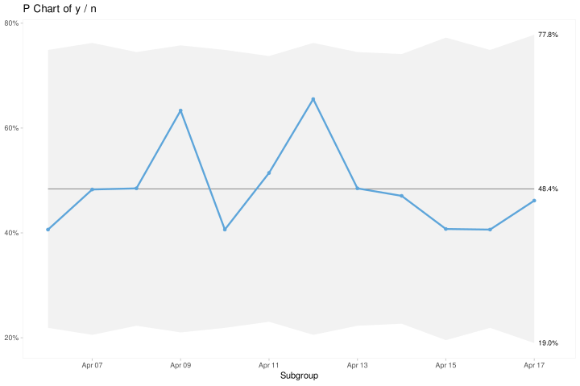

D R Notes
This is not an R tutorial. Rather, this appendix aims to explain and clarify some of the tools and techniques we use in this book to import and prepare data for plotting using only base R functions. We are very well aware of new and modern approaches to data manipulation from the tidyverse and data.table packages – we use these tool ourselves every day – but we find it valuable to be able to handle data in base R. Especially when sharing code or building R packages it is generally a good strategy to avoid unnecessary dependencies on external packages.
First, we will look at some data structures and types that are essential to this book. Next, we will discuss some principles for importing data from text files into data frames and how to manipulate these to make data ready for plotting. Finally, we give some useful tips and tricks
D.1 Data structures and classes
The simplest data structure in R is the vector: zero or more data elements of the same type. Data come in several basic types (classes). We are mainly concerned with logical, numeric and character values. Date and datetime values, which are especially important in SPC, are basically just numeric values representing the number of days (dates) or seconds (datetimes) since the beginning of the year 1970.
The data frame is (for our purpose) probably the most important data structure in R. Data frames are collections of vectors that may be of different types but are all of the same length. Think matrix or table with rows and columns where each row represents an observation, each column represents a variable, and each cell represents a data value. All rows and all columns have the same length, and all cells have values (including NA for missing data).
D.2 Plot-ready data frames
When plotting time series data including spc data, R usually expects two vectors, one for the x axis representing the subgroups, which in its simplest form may be a sequence of numbers or dates and one for the y axis representing the indicator values to be plotted. To correctly calculate the control limits in spc charts, we often need a third variable representing the denominator of the count data in the y variable. Thus, a generic plot-ready data set for making an spc chart may look like this.
# A tibble: 12 × 3
x y n
<date> <int> <int>
1 2025-10-14 13 32
2 2025-10-15 14 29
3 2025-10-16 16 33
4 2025-10-17 19 30
5 2025-10-18 13 32
6 2025-10-19 18 35
7 2025-10-20 19 29
8 2025-10-21 16 33
9 2025-10-22 16 34
10 2025-10-23 11 27
11 2025-10-24 13 32
12 2025-10-25 12 26To plot a P chart from these data with the qic() function from the qicharts2 package, we may do this, where dta is the name of the data frame containing the three variables x, y, and n:

Notice that to correctly plot dates or datetimes on the x axis, it is important that the x variable is of the correct class (Date for dates or POSIXct for datetimes).
D.3 Importing data from text files
When importing data from a text file into R using one of the base R read.*() functions, data are returned as a data frame.
For this book, we provide all data sets as comma separated values (csv) in text files that can be read using the read.csv() function. Each data file begins with a number of commented lines that explains the content and the variables in data. For example, the first 18 lines of the “bacteremia.csv” file looks like this:
# Bacteremia
#
# Hospital acquired and all cause bacteremias and 30 days mortality
#
# Variables:
# month (date): month of infection
# ha_infections (numeric): number of hospital acquired infections
# risk_days (numeric): number of patient days without infection
# deaths (numeric): 30-day mortality after all-cause infection
# patients (numeric): number of patients with all-cause infection
month,ha_infections,risk_days,deaths,patients
2017-01-01,24,32421,23,100
2017-02-01,29,29349,22,105
2017-03-01,26,32981,13,99
2017-04-01,16,29588,14,85
2017-05-01,28,30856,17,98
2017-06-01,16,30544,15,85
...Lines beginning with a hash symbol (#) are comments. The first non-blank line after the comments holds the variable names, and the the rest of the file contains the data values separated by commas (,).
Note how the dates in the first column are formatted using the only unmistakeable way of writing dates: year-month-day (yyyy-mm-dd). We highly recommend to always store dates in this format, which also happens to be the international ISO standard for writing dates. Also, ISO dates, when used in file names, sort correctly and also have the advantage of being easily recognised as dates by R (and other statistical software).
If dates are stored in any other format (e.g. dd-mm-yyyy), we may need to import them as character values and later convert them to dates using the as.Date() function.
When reading data in R programmes for use in production environments, we recommend that you specify the data type (class) of each column using the colClasses argument.
# read data from file and assign to variable named d
d <- read.csv('data/bacteremia.csv',
comment.char = '#',
colClasses = c(month = 'Date',
ha_infections = 'integer',
risk_days = 'integer',
deaths = 'integer',
patients = 'integer'))
# print the first six lines of data
head(d) month ha_infections risk_days deaths patients
1 2017-01-01 24 32421 23 100
2 2017-02-01 29 29349 22 105
3 2017-03-01 26 32981 13 99
4 2017-04-01 16 29588 14 85
5 2017-05-01 28 30856 17 98
6 2017-06-01 16 30544 15 85'data.frame': 24 obs. of 5 variables:
$ month : Date, format: "2017-01-01" "2017-02-01" ...
$ ha_infections: int 24 29 26 16 28 16 14 18 27 30 ...
$ risk_days : int 32421 29349 32981 29588 30856 30544 26482 27637 30495 30600 ...
$ deaths : int 23 22 13 14 17 15 15 25 21 24 ...
$ patients : int 100 105 99 85 98 85 89 99 103 86 ...D.4 Manipulating data frames
We will import the C-section data set to demonstrate adding variables and aggregating data.
d <- read.csv('data/csection_delay.csv',
comment.char = '#',
colClasses = c(datetime = 'POSIXct',
month = 'Date',
delay = 'integer'))
head(d) datetime month delay
1 2016-01-06 03:55:40 2016-01-01 22
2 2016-01-06 20:52:34 2016-01-01 22
3 2016-01-07 02:50:43 2016-01-01 29
4 2016-01-07 22:32:27 2016-01-01 28
5 2016-01-09 14:56:09 2016-01-01 22
6 2016-01-09 21:21:24 2016-01-01 20The C-section data contains 208 rows representing individual C-sections. Our aim for this exercise is to reduce data to a plot ready data frame with one row per month and the number of C-section that were on target and the total number of C-sections.
D.4.1 Adding variables to data frames
The delay variable is the number of minutes from decision to perform a C-section to delivery of the baby. The standard target value for grade 2 C-sections is less than 30 minutes. If we want to plot the proportion of C-sections that are on time (i.e. less than 30 min.), we first need to dichotomise the delay variable into a logical variable, ontime, that is TRUE when delay is less than 30. We add this new variable to the data frame using the $-notation.
datetime month delay ontime
1 2016-01-06 03:55:40 2016-01-01 22 TRUE
2 2016-01-06 20:52:34 2016-01-01 22 TRUE
3 2016-01-07 02:50:43 2016-01-01 29 TRUE
4 2016-01-07 22:32:27 2016-01-01 28 TRUE
5 2016-01-09 14:56:09 2016-01-01 22 TRUE
6 2016-01-09 21:21:24 2016-01-01 20 TRUED.4.2 Aggregating data frames
Then we aggregate data to one row per month. For this, we use the split-apply-combine strategy by first splitting the data frame into a list of data frames, one per month. Next, we apply the same summary function to all elements (months) of this list collapsing into a one-row data frame. Finally, we combine the elements back into a data frame again.
d2 <- split(d, d$month) # Split data frame by month.
d2 <- lapply(d2, function(x) { # Apply summaries to each group.
data.frame(month = x$month[1],
avg_delay = mean(x$delay),
n = nrow(x),
n_ontime = sum(x$ontime))
})
d2 <- do.call(rbind, # Combine groups into data frame.
c(d2, make.row.names = FALSE))
head(d2) month avg_delay n n_ontime
1 2016-01-01 23.85714 7 7
2 2016-02-01 24.45455 11 9
3 2016-03-01 22.45455 11 10
4 2016-04-01 22.66667 9 9
5 2016-05-01 22.50000 8 8
6 2016-06-01 22.00000 5 4'data.frame': 24 obs. of 4 variables:
$ month : Date, format: "2016-01-01" "2016-02-01" ...
$ avg_delay: num 23.9 24.5 22.5 22.7 22.5 ...
$ n : int 7 11 11 9 8 5 7 12 7 12 ...
$ n_ontime : int 7 9 10 9 8 4 5 12 6 11 ...The three functions split(), lapply(), and do.call() may be unfamiliar to many R users, but it pays to get to know them – read the documentation.
The split-apply-combine strategy may be performed a lot easier with functions from the tidyverse or table.table packages. But, as mentioned, we find it useful to know the base R ways of doing things, not the least to maintain independence from external packages when creating our own functions.
D.5 Tips and tricks
D.5.1 Cutting dates and datetimes
In the C-section data set the month variable represents the time period of each delivery used for subgrouping data, that is counting events and cases per month. The month variable was created by “cutting” the datetime variable into monthly chunks.
Converting dates and datetimes into time period – for example weeks, months or quarters – is a common task, not the least in SPC. It is easily done using the cut() function, which is a generic function with many uses. However, the syntax for cutting dates is poorly documented. To cut dates we use two arguments: first, the vector of date(time)s to be cut; second, the interval we want.
[1] "2000-02-29"[1] 2000-02-01
Levels: 2000-02-01Notice that cut() returns a factor. We need to convert it back to a date:
[1] "2000-02-01"The breaks argument accepts a character string that qualifies for a time period, for example:
[1] "2000-02-28"[1] "2000-01-01"We can even specify multiples of time periods in the breaks argument:
[1] "2000-02-28"Cutting dates is such a common task that we may want to make our own function for the purpose:
[1] "2000-02-01"[1] "2000-02-28"[1] "2000-01-01"D.5.2 Getting age from date of birth
In healthcare we often need to know the patient’s age on a certain date. By “age” we usually mean a whole number of years since the patient’s date of birth. However, year is not a well defined unit of time, and age is really a continuous variable. Therefore, we are usually better off knowing the patient’s age in days, which in turn can always be converted to decimal or integer years if necessary.
How old is R today?
today <- as.Date('2025-04-24')
r_dob <- as.Date('2000-02-29')
# calculate age in days
(age_in_days <- today - r_dob)Time difference of 9186 daysWhen subtracting dates we get back a difftime object. Usually we want to convert this to an integer:
[1] 9186A calendar year is on average a little less than 365.25 days. We can converts age in days to age in years:
[1] 25.1499Putting everything together:
[1] 25.1499Notice that this calculation may be off by up to one day depending on the number and position of leap years. However, this is far better than relying on age expressed in whole years.
D.5.3 Naming files and variables
Book have been written about how to and how not to name variables and files. Here is our take on a minimal list of dos and don’ts. Feel free to make your own naming style – and stick to it. Mixing styles is a source of confusion not only for others but also for your future self.
Always:
use lower case ascii letters (a-z) and integers (0-9), e.g. “myvariable”, “myfile.R”;
separate words with “-”, “_“, or”.”, e.g.: “my_variable”, “my-variable”, “my.variable”;
use ISO format (yyyy-mm-dd) for dates, e.g.: “2001-02-03”;
when numbering files, use use a suitable number of leading zeros, e.g. “myfile_01”, “myfile_02”, … “myfile_10”, “myfile_11”.
Newer:
use spaces, e.g.: “my variable”, “my file.R”;
versionize files using words like “final”, “finalfinal”, “new”, “draft”, etc. Instead, use ISO dates, e.g.: “my_file_2001-02-03.R”.